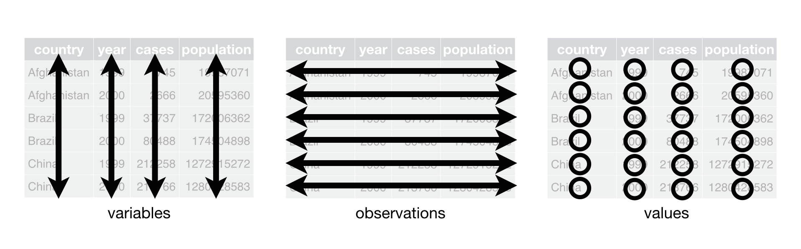
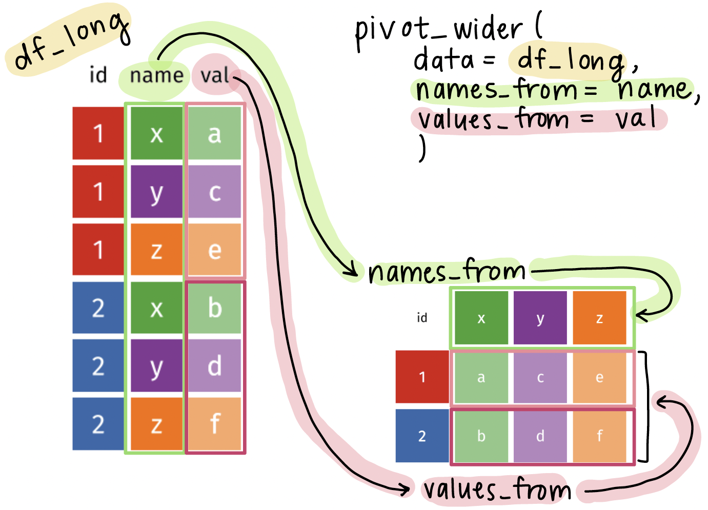

Warning: Missing `trust` will be set to FALSE by default for RDS in 2.0.0.
Warning: Missing `trust` will be set to FALSE by default for RDS in 2.0.0.Data transformation: Widening data
Tidy data1

Each variable must have its own column
Each observation must have its own row
Each value must have its own cell
Let’s look at an example2 of data represented in different ways
We will look at a dataset measuring tuberculosis (TB) cases for different countries. We have information on the country, year, population, and number of TB cases:
Each column is one piece of information:
# A tibble: 6 × 4
country year cases population
<chr> <dbl> <dbl> <dbl>
1 Afghanistan 1999 745 19987071
2 Afghanistan 2000 2666 20595360
3 Brazil 1999 37737 172006362
4 Brazil 2000 80488 174504898
5 China 1999 212258 1272915272
6 China 2000 213766 1280428583Population and cases are “types” of counts:
# A tibble: 12 × 4
country year type count
<chr> <dbl> <chr> <dbl>
1 Afghanistan 1999 cases 745
2 Afghanistan 1999 population 19987071
3 Afghanistan 2000 cases 2666
4 Afghanistan 2000 population 20595360
5 Brazil 1999 cases 37737
6 Brazil 1999 population 172006362
7 Brazil 2000 cases 80488
8 Brazil 2000 population 174504898
9 China 1999 cases 212258
10 China 1999 population 1272915272
11 China 2000 cases 213766
12 China 2000 population 1280428583We look at the rate of TB cases:
# A tibble: 6 × 3
country year rate
<chr> <dbl> <chr>
1 Afghanistan 1999 745/19987071
2 Afghanistan 2000 2666/20595360
3 Brazil 1999 37737/172006362
4 Brazil 2000 80488/174504898
5 China 1999 212258/1272915272
6 China 2000 213766/1280428583What do we do when our data are not tidy?
- In HRS data, let’s say we have data on many conditions
tibble(hrs_long_cond)# A tibble: 15,453 × 5
id sex age_yr condition has_condition
<chr> <chr> <dbl> <chr> <chr>
1 550015_010 Male 56 sleep_problems No
2 550015_010 Male 56 diabetes No
3 550015_010 Male 56 heart_disease No
4 550015_010 Male 56 lung_disease No
5 550015_010 Male 56 arthritis No
6 550015_010 Male 56 cancer No
7 550015_010 Male 56 stroke No
8 550015_010 Male 56 high_bp No
9 550015_010 Male 56 psych_condition No
10 550015_020 Female 49 arthritis No
# ℹ 15,443 more rowsCurrent issue: Column has_condition has information on many conditions. Yes can mean a person has diabetes or lung disease.
The pivot_wider() function
- The
pivot_wider()function is used to widen data, which means it takes a couple columns and spreads the data across many columns.
df_wide <- pivot_wider(
data = df_long,
names_from = column_with_new_headers,
values_from = column_with_cell_values
)datawill usually be fed using the pipe operator (|>)names_fromspecifies the column that will be used to create new column namesvalues_fromspecifies the column that will be used to fill in the new columns with values
Visual of what pivot_wider() does

Using the pivot_longer() function on the HRS dataset
- We want to
- Keep the
idcolumn as is - Pivot the
conditioncolumn into new columns, one for each condition - Put all the values from
has_conditioninto the new columns
- Keep the
- 1
-
Feed
hrs_long_condinto thepivot_wider()function - 2
-
Use
pivot_wider()to specify the columns to pivot into wider format - 3
-
Use
names_fromto specify the old column (condition) that the new column names will be pulled from (e.g.,diabetes,lung_disease,heart_disease) - 4
-
Use
values_fromto specify the old column (has_condition) that the new column values will be pulled from (e.g.,Yes,No)
Note: In pivot_longer() we need quotes around the new column names, but in pivot_wider() we do NOT need quotes around the column names because they already exist in the dataset.
Let’s compare the before and after!
Original, long dataset:
tibble(hrs_long_cond)# A tibble: 15,453 × 5
id sex age_yr condition has_condition
<chr> <chr> <dbl> <chr> <chr>
1 550015_010 Male 56 sleep_problems No
2 550015_010 Male 56 diabetes No
3 550015_010 Male 56 heart_disease No
4 550015_010 Male 56 lung_disease No
5 550015_010 Male 56 arthritis No
6 550015_010 Male 56 cancer No
7 550015_010 Male 56 stroke No
8 550015_010 Male 56 high_bp No
9 550015_010 Male 56 psych_condition No
10 550015_020 Female 49 arthritis No
# ℹ 15,443 more rowsNew, tidy, wider dataset:
tibble(hrs_01_wide)# A tibble: 1,717 × 12
id sex age_yr sleep_problems diabetes heart_disease lung_disease
<chr> <chr> <dbl> <chr> <chr> <chr> <chr>
1 550015_010 Male 56 No No No No
2 550015_020 Female 49 No No No No
3 550038_010 Male 53 No Yes No No
4 550041_010 Female 51 No Yes Yes No
5 550041_020 Male 51 No Yes Yes No
6 550043_010 Female 75 No No No No
7 550047_010 Male 54 No No No No
8 550063_010 Male 52 Yes No No No
9 550064_010 Male 56 No Yes No No
10 550066_010 Female 80 No Yes No No
# ℹ 1,707 more rows
# ℹ 5 more variables: arthritis <chr>, cancer <chr>, stroke <chr>,
# high_bp <chr>, psych_condition <chr>Notes: number of rows is 9 times shorter, each individual has 1 row of observations instead of 9 rows, each condition has its own column
Wrap-up
- We don’t always get data in the format we want
- Sometimes, it’s too long!
- The
pivot_wider()function is a great tool to help us transform our data into a tidy format
- This will help us a lot in grouping summaries and visualizations
Resources
- More information of the
pivot_wider()function can be found here
Footnotes
Source: R for Data Science. Grolemund and Wickham.↩︎
Source: R for Data Science. Grolemund and Wickham. Example pulled from Section 5.2↩︎